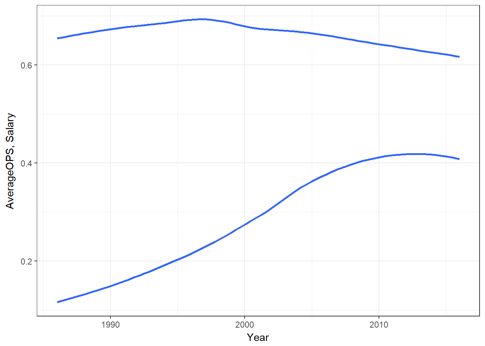
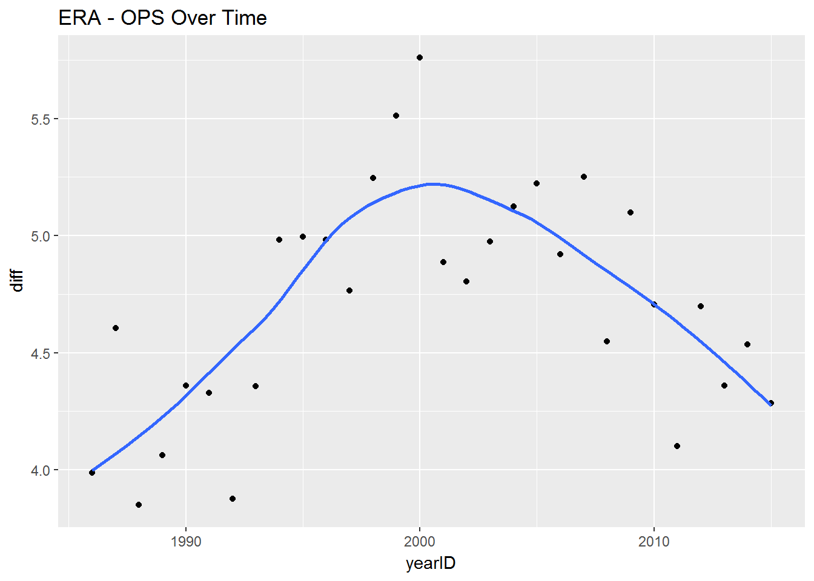

Analysis
batting2 = filter(batting, batting$yearID > 1961) %>% select(yearID,H,X2B,X3B,HR,AB,BB,HBP,SF) %>% na.omit() %>% mutate(TB = H+2*X2B+(3*X3B)+(4*HR)) %>% mutate(SLG = TB/AB) %>% na.omit() %>% mutate(OBP = (H + BB + HBP)/(AB + BB + SF + HBP)) %>% mutate(OPS = SLG + OBP) %>% mutate(steroidEra = (yearID>1983 & yearID<2003)) %>% filter(AB>160)We used the filter function from the “dplyr” package and filtered out the data below at the year 1961, since this is the year that baseball had become today’s standard of 162 games. Then we used the select function to pick our desired variables and then omitted any missing values(Na’s). We filtered out players with few at bats. Lastly we used mutate to create a series of new variables which ended up producing OPS, as such
\[TB=H+2(X2B)+3(X3B)+4(HR)\] \[ SLG=TB/AB \] \[OBP=(H+BB+HBP)/(AB +BB+SF+HBP) \] \[OPS=SLG+OBP \]
table = batting2 %>% group_by(yearID,steroidEra) %>% summarise(avgOPS = mean(OPS))Next, we created created another subset of the data with just year, whether the year is in the steroid era, and a new variable, average OPS for the year.
ggplot(batting2, aes(x =yearID, y = OPS)) + geom_point(aes(x =yearID, y = OPS ,col=steroidEra)) + geom_smooth(se=FALSE) + ggtitle("OPS Over Time") + xlab("Year") + ylab("OPS") + scale_color_discrete(name='Steroid Era') + theme_minimal() + scale_color_manual(name= "Era",labels=c("Non-Steroid Era","Steroid Era"),values = c("green","red")) + theme_bw() 
ggplot(table, aes(x =yearID, y = avgOPS)) + geom_point(aes(x =yearID, y = avgOPS ,col=steroidEra)) + geom_smooth(se=FALSE) + ggtitle("Average OPS Over Time") + xlab("Year") + ylab("Average OPS") + scale_color_manual(name= "Era",labels=c("Non-Steroid Era","Steroid Era"),values = c("green","red")) + theme_bw() 
The OPS Over Time graph shows that there was a bump in OPS during the steroid era and that it seems to be decreasing now. The average OPS graph is similar. We see decreases at the beginning of the 60’s and then slowing increases until the steroid era where the increase is larger. After the steroid era OPS decreases.
pitching2 = filter(pitching, pitching$yearID > 1961)%>%
select(yearID,ERA,G) %>% na.omit %>%
mutate(steroidEra = (yearID>1983 & yearID<2003)) %>% filter(G>30)
table2 = pitching2 %>% group_by(yearID,steroidEra) %>% summarise(avgERA = mean(ERA))We used the filter function on the pitching data to get years from 1961 to current. This time we did not have to do any extra calculations to get ERA. Thus, we selected year, whether the year was in the steroid era, and the amount of games the played played. After, we filtered out players with few games.
Again, we created created another subset of the data with just year, whether the year is in the steroid era, and ERA.
ggplot(pitching2, aes(x =yearID, y = ERA)) + geom_point(aes(col = steroidEra)) + geom_smooth(se=TRUE) + ggtitle("ERA Over Time") + xlab("Year") + ylab("Average ERA") + scale_color_discrete(name='Steroid Era') + theme_minimal() + scale_color_manual(name= "Era",labels=c("Non-Steroid Era","Steroid Era"),values = c("green","red")) + theme_bw() 
ggplot(table2, aes(x =yearID, y = avgERA)) + geom_point(aes(col = steroidEra)) + geom_smooth(se=FALSE) + ggtitle("Average ERA Over Time") + xlab("Year") + ylab("Average ERA") + scale_color_discrete(name='Steroid Era') + scale_color_manual(name= "Era",labels=c("Non-Steroid Era","Steroid Era"),values = c("green","red")) + theme_bw() 
We can see that individually, ERA was steady until the 90’s, where it increases a lot. The average ERA stated increasing in the 70’s and begins to sharply increase in the mid 80’s. After the steroid era it decreases.
opsera = left_join(table,table2, by='yearID')
ggplot(opsera, aes(avgERA,avgOPS,col = steroidEra.x)) + geom_point() + geom_smooth(se=FALSE) + scale_color_manual(name= "Era",labels=c("Non-Steroid Era","Steroid Era"),values = c("green","red")) + theme_bw() + xlab("Average ERA") + ylab("Average OPS")When average ERA is plotted against average OPS, we can see that not every year during the steroid era had a much higher OPS, however, some years during the steroid era did have a significantly high OPS.
Drawing Conclusions:
From the 60’s up till the steroid era, we see an increase in average OPS and decrease in average ERA, signifying that preformance was increasing for both pitchers and hitters.
During the steriod era, ERA increase when OPS did, and then both begin to decrease around the end of the steriod era.
It appears that steriods did give an advantage to batters over pithers during the steroid era.